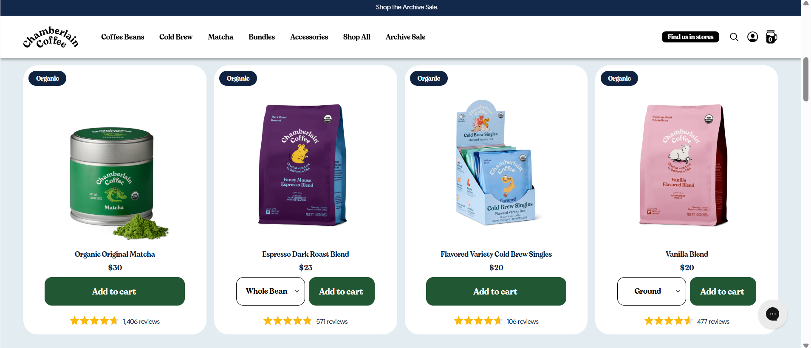
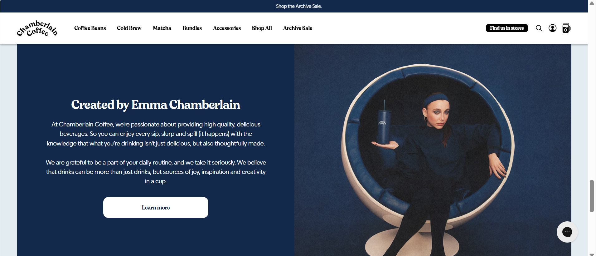
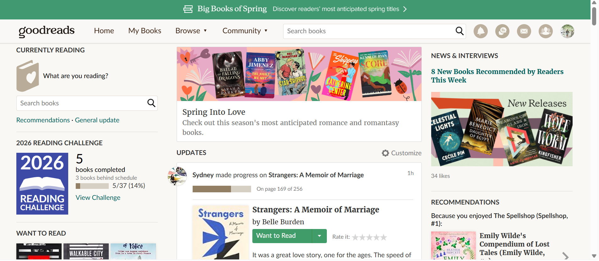
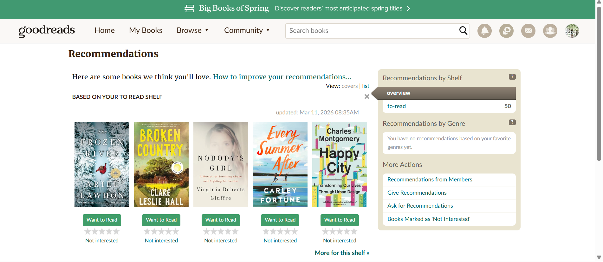

Typography in a website can add an entirely different atmosphere to the content. Whether it's the font, text layout, or white space, it all creates a certain emotional appeal to relate to the viewer.
When I think of a website that does typography in a way I find fresh and interesting, I think of Emma Chamberlain's coffee company, Chamberlain Coffee at https://chamberlaincoffee.com. She uses white space to single in on her products and balance out the vibrant colors of her packaging. Her main font is a decorative typeface that is used widely throughout her website. This is an exciting choice, because she intentionally breaks the “rules” of using decorative fonts sparingly. The emotional appeal is fun, it-girl, and extra. It's fun to browse her coffee products and read the names (and the “Add to Cart” button) in an attention-grabbing font.

It should be noted that although she uses her decorative font in a playfully irresponsible way throughout her website that leans into her laissez-faire personality, whenever there is longer body text to read, she switches to a sans serif font to aid with readability. This can be seen in her “Created by Emma Chamberlain” section.

One website I visit that brings me back to previous eras in typography is the Goodreads website at https://www.goodreads.com. Although recent changes have been made to the website, like the new logo update, it still isn't on par with similar popular book-tracking websites. For example, the home page is busy and almost leaves no white space to break up the content.

Under the recommendations, the layout feels dated especially in the recommendations by shelf pop-up. The text in each section is incohesive and the font sizes are different. Again, the lack of white space makes it difficult to understand all of the information that is presented in the pop-up.

This example demonstrates why white space is important in typography. To get your point across clearly, you also need to balance not adding too much content that can distract and confuse the audience.